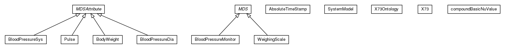

JavaScript is disabled on your browser.
Skip navigation links
Overview
Package
Class
Use
Tree
Deprecated
Index
Help
Prev Package
Next Package
Frames
No Frames
All Classes
Package org.universAAL.ontology.X73

Class Summary
Class
Description
AbsoluteTimeStamp
BloodPressureDia
BloodPressureMonitor
BloodPressureSys
BodyWeight
compoundBasicNuValue
MDS
MDSAttribute
Pulse
SystemModel
WeighingScale
X73
X73Ontology
Skip navigation links
Overview
Package
Class
Use
Tree
Deprecated
Index
Help
Prev Package
Next Package
Frames
No Frames
All Classes
Copyright © 2018
universAAL Consortium
. All rights reserved.